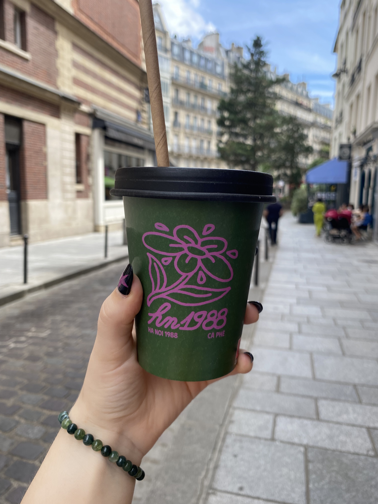

Trying Vietnamese coffee for the first time at Ha Noi 1988 Ca Phe, Paris
Cafe Hopping
As a self-proclaimed coffee lover, cafe hopping is one of my favourite things to do, especially when I'm travelling to a new city! I spent over 2 years living in South Korea, a country obsessed with iced americanos and artsy cafes, so that's where I picked up this interest. Cafe hopping is when you spend a day simply going from one cafe to the next, enjoying a different drink at each place.
Dalgona Coffee
Dalgona coffee became a huge craze during the early days of the pandemic. This sweet, frothy coffee is fun to make at home and a great arm work out!
Click here to try a recipe!